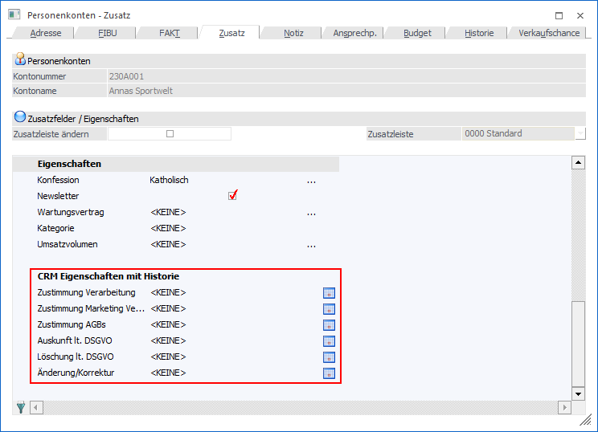
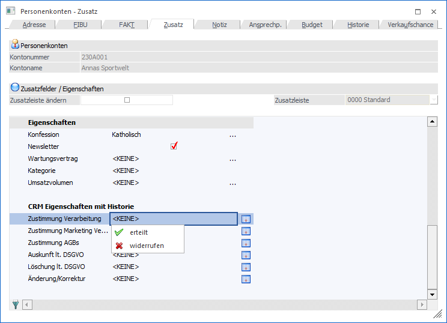
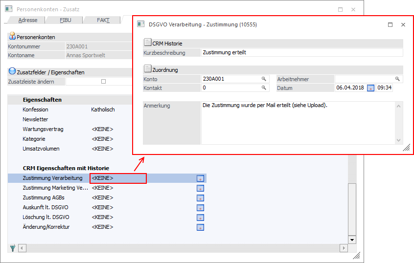
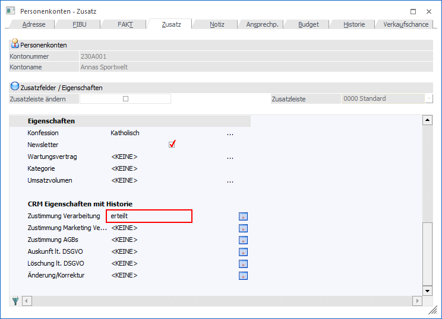
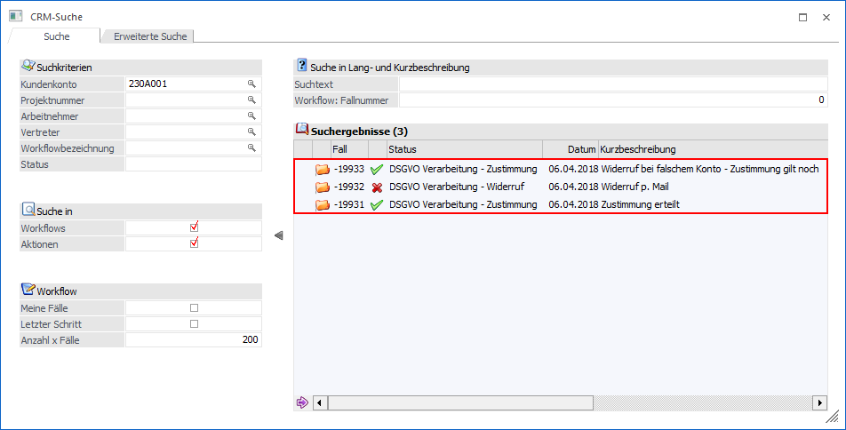
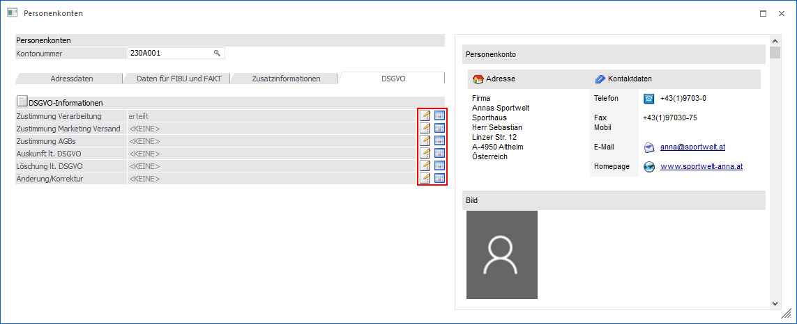
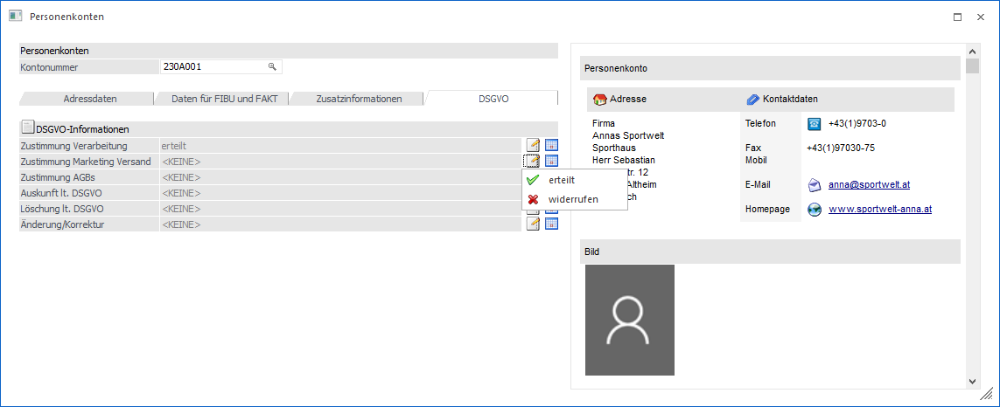
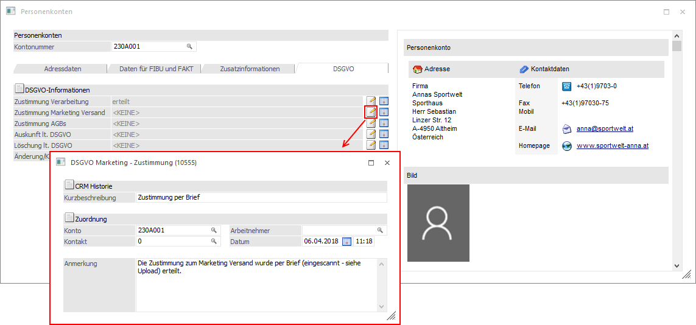
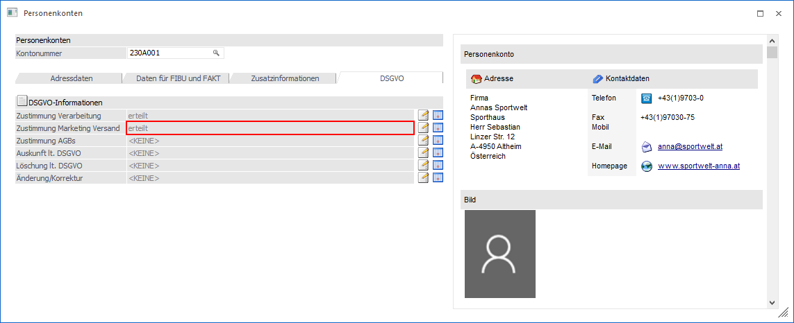
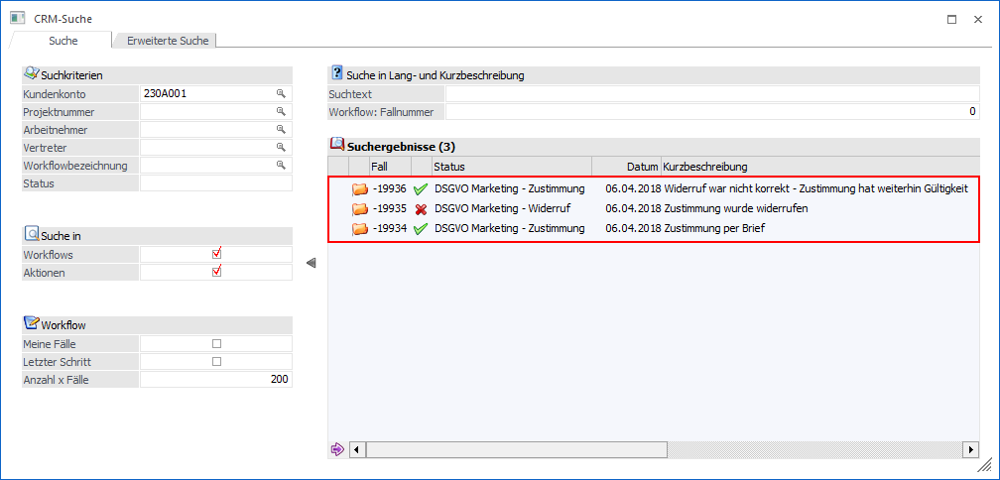

Standard Formular
In den WinLine Stammdatenfenstern (Formular "0 - Allgemein") werden Eigenschaften des Typs "C - CRM Historie" in einem gesonderten Bereich dargestellt.

Ø Eigenschaftsauswahl
Per Doppelklick auf die Eigenschaftsauswahl öffnet sich ein Auswahlmenü, aus welchem die Zuordnung gewählt werden kann. Hierfür muss für die Eigenschaft ein Objektrecht der Stufe "2 - bearbeiten" oder höher vorliegen.

Nach der Auswahl wird zunächst der zugewiesene CRM Fall gestartet, wodurch sich die entsprechende CRM Vorlage öffnet.

Nach der Speicherung des CRM Falls wird die Eigenschaft automatisch in dem Stammdatenobjekt gesetzt.
Hinweis
Es wird die Eigenschaft nur für den Typ des Ausgangsobjekts (z.B. das Personenkonto) gesetzt. Sollte in der CRM Vorlage das Objekt (z.B. die Personenkontonummer) geändert werden, so wird die Eigenschaft in dem neuen Objekt gesetzt.

Ø Historie
Durch Anwahl des Buttons wird das Fenster "CRM-Suche" geöffnet, in welchem alle CRM Historieneinträge der Eigenschaft des aktuellen Stammdatenobjekts angezeigt werden.

Achtung
Wird der Button nicht angeboten, so liegt für die Eigenschaft kein Objektrecht der Stufe "2 - bearbeiten" oder höher vor.
Alternatives Formular
Wird mit einem alternativen Formular zur Bearbeitung der Stammdaten gearbeitet, so ist die Position der CRM Historien Eigenschaft abhängig von der verwendeten Vorlage. Im Gegensatz zu Eigenschaften des Typs "7 - Fix" bzw. "8 - Veränderbar" werden 2 Buttons angeboten.

Ø Eigenschaftsauswahl
Durch die Anwahl des Buttons öffnet sich ein Auswahlmenü, aus welcher die Zuordnung gewählt werden kann. Ist der Button nicht anwählbar (ausgegraut), so liegt für die Eigenschaft kein Objektrecht "2 - bearbeiten" oder höher vor oder lt. Vorlagendefinition handelt es sich um ein Lese-Feld.

Nach der Auswahl wird zunächst der zugewiesene CRM Fall gestartet, wodurch sich die entsprechende CRM Vorlage öffnet.

Nach der Speicherung des CRM Falls wird die Eigenschaft automatisch in dem Stammdatenobjekt gesetzt.
Hinweis
Es wird die Eigenschaft nur für den Typ des Ausgangsobjekts (z.B. das Personenkonto) gesetzt. Sollte in der CRM Vorlage das Objekt (z.B. die Personenkontonummer) geändert werden, so wird die Eigenschaft in dem neuen Objekt gesetzt.

Ø Historie
Durch Anwahl des Buttons wird das Fenster "CRM-Suche" geöffnet, in welchem alle CRM Historieneinträge der Eigenschaft des aktuellen Stammdatenobjekts angezeigt werden. Ist der Button nicht anwählbar (ausgegraut), so liegt für die Eigenschaft kein Objektrecht "2 - bearbeiten" oder höher vor oder lt. Vorlagendefinition handelt es sich um ein Lese-Feld.
